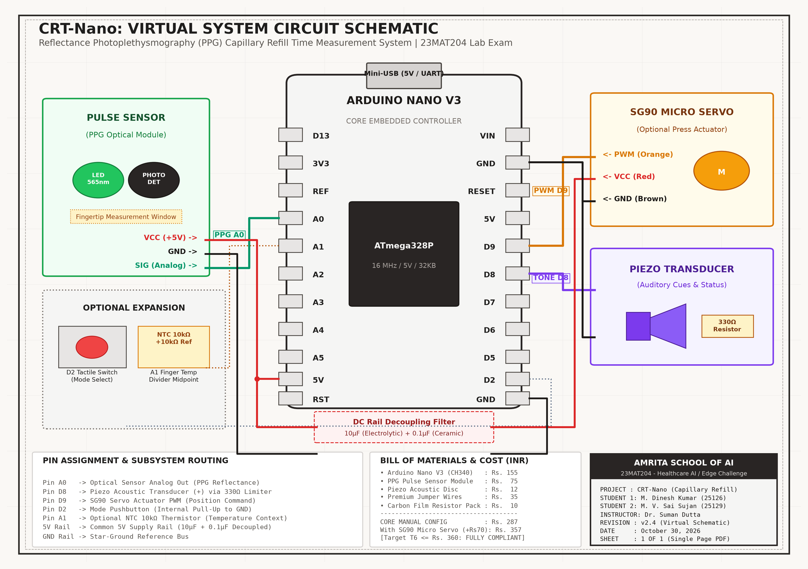
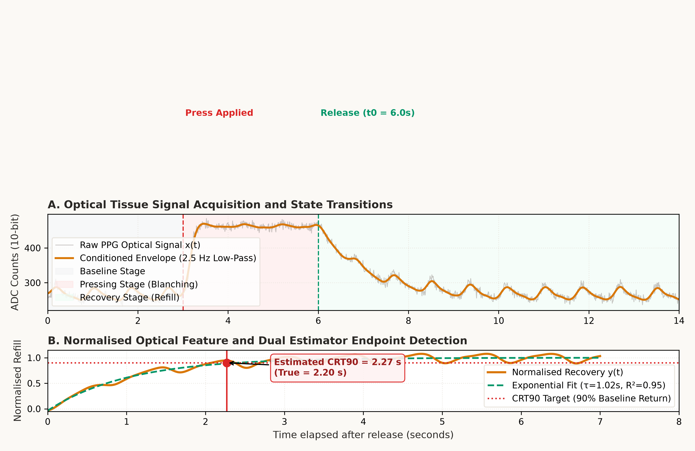
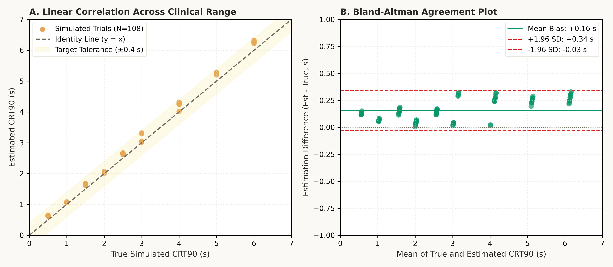
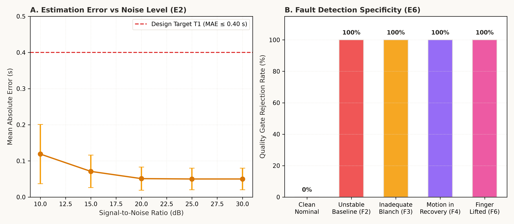
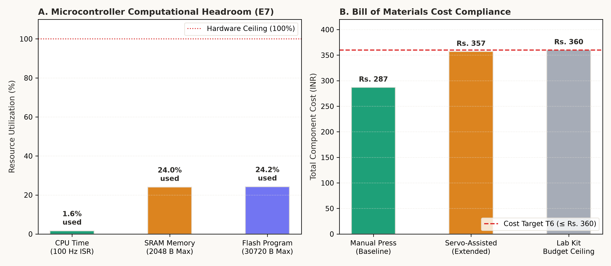

Frugal Healthcare Edge Device: Capillary Refill Time ($CRT_{90}$)
An optical reflectance photoplethysmography (PPG) edge instrument engineered for the Arduino Nano V3 (ATmega328P). Provides automated optical recovery time extraction using baseline normalisation, dual-estimator consensus, and 6-stage algorithmic quality gates to eliminate subjective visual timing discordance in acute triage.
CB.AI.U4AID25126)CB.AI.U4AID25129)1. Continuous Tissue Model: $x(t) = R_0 - \kappa v(t) + a v(t) p(t) + d(t) + n(t)$ where $v(t) \in [0, 1]$.
2. Reperfusion Dynamics: $v(t) = 1 - (1 - v_{min}) e^{-(t - t_0)/\tau}$ for $t \ge t_0$.
3. Operational Endpoint ($CRT_{90}$): Defined as $v(t) = 0.90 \implies CRT_{90} = \tau \ln\left(\frac{1 - v_{min}}{0.1}\right)$. Dual estimators evaluate both sample-by-sample 90% threshold dwell and Levenberg-Marquardt non-linear exponential fitting.
Web Audio synthesizer generates audible cues (ready tone, press cue, release tone, success chime).

| Nano Pin | Subsystem Connection | Signal Type | Functional Description |
|---|---|---|---|
| A0 | Pulse Sensor (PPG Module) SIG | Analog (0–5V) | Acquires raw reflectance signal modulated by capillary hemoglobin absorption. |
| D8 | Piezo Transducer (+) via 330Ω | PWM / Square Wave | Acoustic user feedback (cue beeps, release prompt, victory fanfare, error buzzer). |
| D9 | SG90 Micro Servo PWM (Orange) | Servo Control (50 Hz) | Optional motorized press arm actuator with conservative angle travel limits. |
| D2 | Tactile Button to GND (Pull-Up) | Digital Input | Manual trigger / configuration mode toggle jumper. |
| A1 | NTC 10kΩ Thermistor Divider | Analog (0–5V) | Optional ambient/finger skin temperature context acquisition. |
| 5V / GND | Regulated Power Bus | Power Rail | Decoupled with 10μF electrolytic + 0.1μF ceramic capacitors to suppress servo inrush noise. |
Designed under strict frugal healthcare engineering principles. The total bill of materials utilizes only 31.3% (Manual) or 38.9% (Servo-assisted) of the allotted kit budget ceiling (Rs. 360).
| Kit Item | Component Name | Technical Role | Unit Cost (INR) | Configuration |
|---|---|---|---|---|
| Kit #2 | Arduino Nano V3 (ATmega328P) | 10-bit ADC sampling, digital filtering, 7-state FSM, serial telemetry | Rs. 155 | Both |
| Kit #3 | Pulse Sensor (PPG Clone Module) | 565nm green LED + photodetector for optical tissue reflectance | Rs. 75 | Both |
| Kit #7 | Piezo Transducer Disc / Buzzer | Audio tone cues (ready, press prompt, release beep, validation chime) | Rs. 12 | Both |
| Kit #11 | Premium Jumper Wires (Bundle) | Point-to-point breadboard and direct pin interconnects | Rs. 35 | Both |
| Kit #13 | Resistor Pack (330Ω, 10kΩ) | Piezo current limiting and thermistor voltage division | Rs. 10 | Both |
| Kit #6 | SG90 Micro Servo (Optional) | Optional motorized press arm mechanism for repeatability | Rs. 70 | Servo Only |
Conducted extensive automated synthetic evaluations across 108 trials varying $CRT_{90}$ from 0.5s to 6.0s, SNR from 10dB to 30dB, and heart rates from 60 to 120 bpm.




Interactive Codebase & Firmware Explorer
Inspect all production Arduino C++ firmware, Python signal processing modules, unit tests, and validation metrics directly in the browser.
// Loading source code...All project code, virtual circuit schematics, verification datasets, and engineering reports: